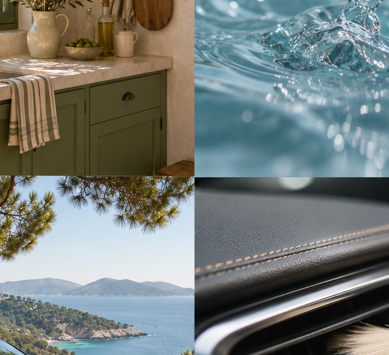
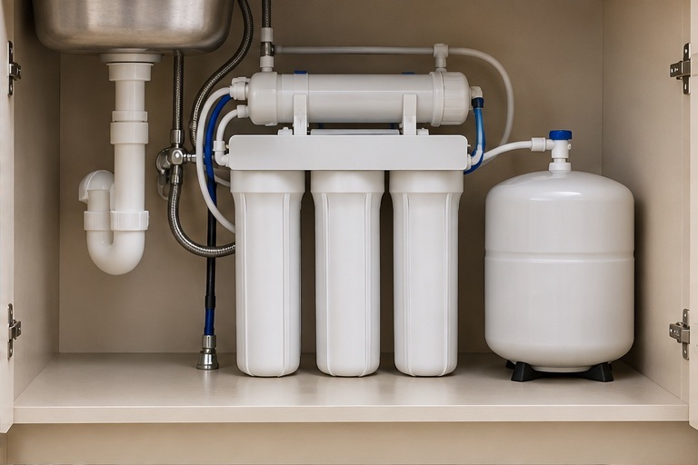

Su Arıtma
Davutlar’da yazlığı kapatırken arıtma cihazı kontrolü
Sezon sonunda cihaz modeli, bakım tarihi ve kapatma talimatını kayda geçirmek bir sonraki açılışı kolaylaştırır.
Yazıyı okuAkış düşüşünü tarif ederken cihaz modeli, kullanım zamanı ve son bakım kaydıyla başlayın.

Kuşadası’ndaki evinizde arıtma musluğunun akışı azalırsa sorunun sürekli mi, yalnızca art arda kullanımda mı görüldüğünü not edin. Evdeki diğer soğuk su musluklarında da değişiklik olup olmadığını gözlemleyin. Bir bardağın dolma süresini farklı zamanlarda karşılaştırmak, değişimin ne kadar belirgin olduğunu anlatmanızı kolaylaştırır. Bağlantıları sökmeden veya tank ayarıyla oynamadan gözlemlerinizi kaydedin.
Cihazın model etiketi, mevcut filtre kodları ve son değişim tarihini birlikte bulun. Varsa basınçla ilgili üretici uyarısını ya da cihaz ekranındaki hata mesajını kaydedin. Su akışındaki değişim tek başına hangi parçanın arızalı olduğunu belirlemez. Giriş koşulları, filtreler ve depolama sistemi gibi unsurlar modelin servis talimatına göre incelenebilir.
Bilgi alırken ne zamandır bu durumun olduğunu, son bakımın hangi tarihte yapıldığını ve bir tesisat işlemi yaşanıp yaşanmadığını belirtin. Dolap altında su görürseniz cihazı kullanmaya devam etmeden üreticinin güvenli kapatma talimatını izleyin. Onarım ve parça değişimi önerilerinde işçilik, parça kodu ve işlem sonrası kontrol kapsamını yazılı isteyin.
İVSU Blog
Su Arıtma
Sezon sonunda cihaz modeli, bakım tarihi ve kapatma talimatını kayda geçirmek bir sonraki açılışı kolaylaştırır.
Yazıyı oku
Su Arıtma
Cihaz fiyatını karşılaştırırken kurulum, uygun kartuş ve bakım kapsamını aynı çerçevede değerlendirin.
Yazıyı okuSu Arıtma
Model, parça kodu ve işlem tarihini birlikte saklayarak sonraki bakımlar için kullanılabilir bir kayıt oluşturun.
Yazıyı oku